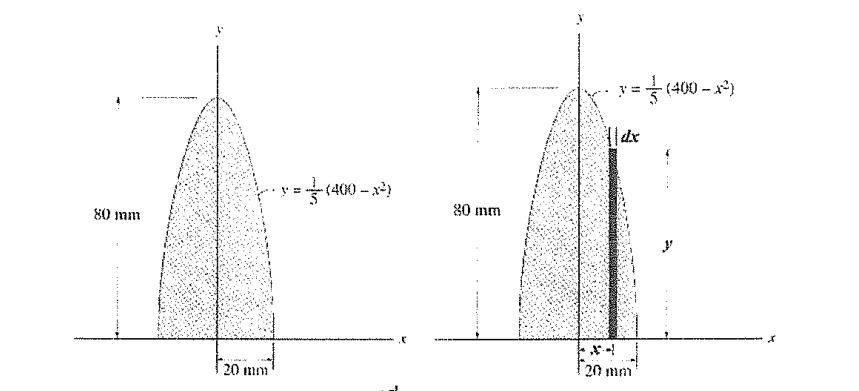
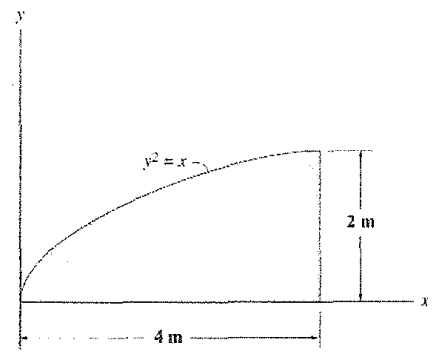
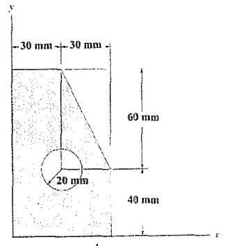
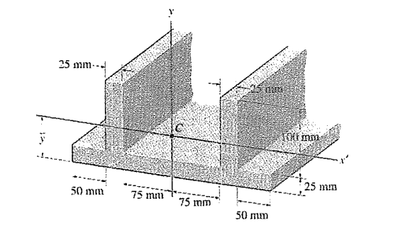
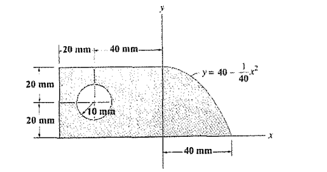

1. จงหาค่า radius of gyration รอบแกน y ของพื้นที่ ดังที่แสดงในรูป

7.94 mm
8.94 mm
9.94 mm
10.94 mm
8.94 mm
9.94 mm
10.94 mm
2. จงหาค่า moment of inertia ของพื้นที่ดังที่แสดงในรูป รอบแกน x และแกน y

26.6 m4 , 7.27 m4
3.27 m4 , 31.6 m4
4.27 m4 , 36.6 m4
30.2 m4 , 3.27 m4
3.27 m4 , 31.6 m4
4.27 m4 , 36.6 m4
30.2 m4 , 3.27 m4
3. จงหาค่า moment of inertia ของพื้นที่ดังที่แสดงในรูป รอบแกน x และแกน y

14.3(10)6 mm4 , 4.54(10)6 m4
12.1(10)6 mm4 , 3.68(10)6 m4
14.3(10)7 mm4 , 4.54(10)7 m4
12.1(10)7 mm4 , 3.68(10)7 m4
12.1(10)6 mm4 , 3.68(10)6 m4
14.3(10)7 mm4 , 4.54(10)7 m4
12.1(10)7 mm4 , 3.68(10)7 m4
4. จงหาค่า moment of inertia ของพื้นที่ดังที่แสดงในรูป รอบแกน y

90.20(10)6 mm4
34.23(10)6 mm4
94.80(10)6 mm4
32.80(10)6 mm4
34.23(10)6 mm4
94.80(10)6 mm4
32.80(10)6 mm4
5. จงหาค่า moment of inertia ของพื้นที่ดังที่แสดงในรูป รอบแกน x รอบแกน y

1.54(10)6 mm4 , 2.71(10)6 mm4
3.56(10)6 mm4 , 2.71(10)6 mm4
1.54(10)7 mm4 , 5.72(10)6 mm4
3.56(10)7 mm4 , 5.72(10)6 mm4
3.56(10)6 mm4 , 2.71(10)6 mm4
1.54(10)7 mm4 , 5.72(10)6 mm4
3.56(10)7 mm4 , 5.72(10)6 mm4